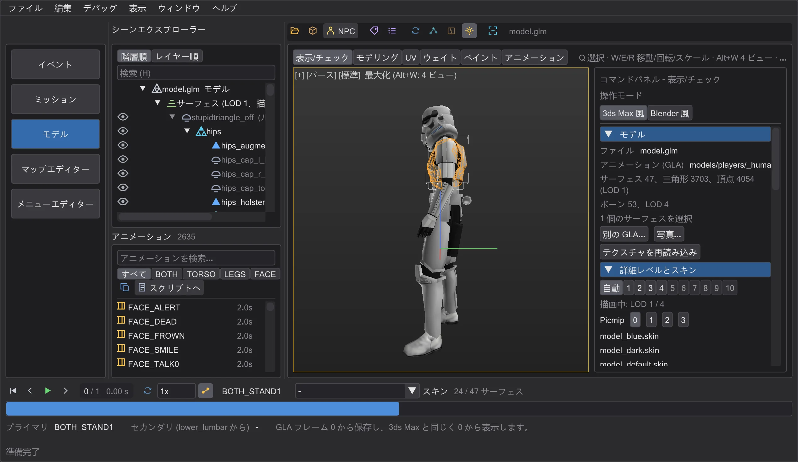
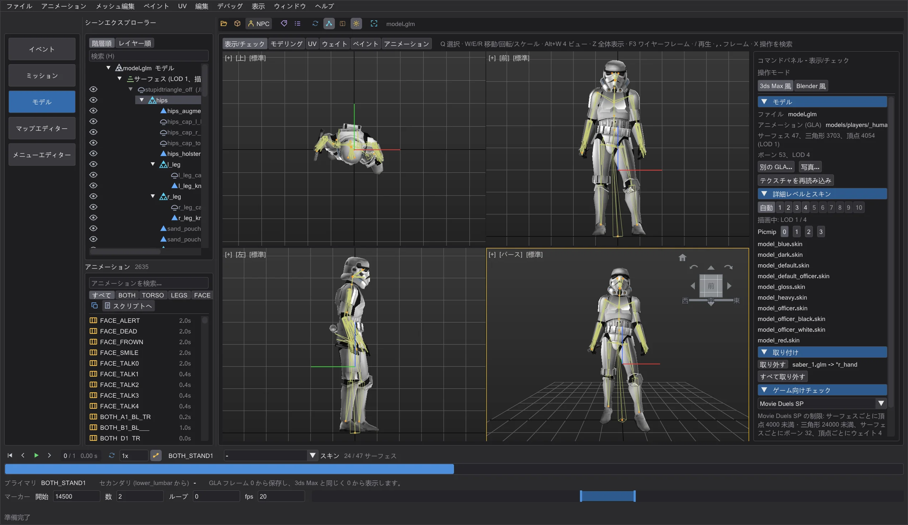

モデルタブ: 表示とチェック
ModView のようにモデルを表示します。サーフェス、タグ、ボーン、LOD、スキン、取り付けたセイバー、プライマリとセカンダリのアニメーションをゲームと同じ方法で描画し、Jedi Academy・Jedi Outcast・Movie Duels の制限に照らしてチェックします。マウスとキーは 3ds Max と同じです。

モデルはこれまでどおり開きます (NPC、.glm、.pk3)。タブは 表示/チェック で始まります。ほかの領域 (モデリング、UV、ウェイト、ペイント、アニメーション) はモデルブロックの次のステージで追加されます。ビュー、エクスプローラー、タイムラインはそこでも使えます。モデルはすべての詳細レベルと一緒に専用のドキュメントに読み込まれ、変更していないモデルは以前とまったく同じ画像になります (Jedi Academy、Jedi Outcast、Movie Duels の models/players にある全モデルで確認)。
シーンエクスプローラー#
シーンエクスプローラー にはサーフェス (階層順 または レイヤー順)、タグ、スケルトンのボーンが表示されます。検索 (H) で名前を絞り込みます。灰色のサーフェスは描画されません。右クリックは ModView やゲームと同じように働きます (G2_SetSurfaceOnOff、G2_SetRootSurface)。オフ はサーフェスを隠して子は残し、オフ(子孫も描画しない) は枝全体を隠し、ルートサーフェスに設定 はこの枝だけを描画し、元の状態 ですべて元に戻します。スキンの name,*off 行も同じようにサーフェスをオフにします。オレンジの点が付いたボーンはゲームコードが参照します。

タグ (たとえば *r_hand) かボーンを右クリックして モデルを取り付け を選ぶと、ゲームアーカイブからモデル (セイバー、武器、頭など) を G2API_AttachG2Model と同じように取り付けます。タグに付けるとタグの三角形に、ボーンに付けるとボーンに従います。ロールアウト 取り付け に一覧が出て、取り外せます。
コマンドパネル#
モデル: ファイル、スケルトン、数値、別の GLA (アーカイブからの GLA オーバーライド)、テクスチャを再読み込み (Alt+R)、写真 (アクティブなビュー、幅 1920 ピクセル以上)。詳細レベルとスキン: LOD 1-10 か 自動。ゲームと同じく距離でレベルが決まります (シングルプレイ: 半径 40、r_lodscale 10、マルチプレイ: 半径 64、r_lodscale 5)。picmip とスキン。表示オプションはビューのヘッダーにあります (下記参照)。
アニメーション のアニメーションをクリックすると プライマリ (全身) として再生します。別のアニメーションを右クリックして セカンダリ ( から) を選ぶと、ゲームの SET_ANIM_UPPER と同じく lower_lumbar から上の上半身で再生します (別の開始ボーン: ボーンを右クリック)。補間 はゲームと同じく 2 つのフレームの間を補間します。タイムラインは 3ds Max や animation.cfg と同じくフレームを 0 から数えます。
ビューのヘッダー、ViewCube とギズモ#
各ビューの左上には 3ds Max のビューポートラベルメニューと同じヘッダーがあります。各フィールドはマウスを重ねると明るくなり、左クリックか右クリックでメニューを開きます。[+]: ビューポートを最大化 (Alt+W)、全体表示 (Z)、ビューに表示するもの (グリッド G、床、原点、バウンディングボックス、選択ブラケット J、統計 7、高さ定規、単色の背景)、サブメニュー ボーンとチェック (ボーン、フィン、法線、タグ、クラック検出、頂点番号と三角形番号)、ViewCube、視野角。[パース]: 3ds Max のキー (P、U、T、B、F、L) で視点を切り替え、ホーム (フィギュアを正面から) もあります。[標準]: このビューのシェーディング - ワイヤーフレーム (F3)、エッジ面 (F4)、両面、白いテクスチャ、頂点ウェイト、シルエット。4 ビューではビューごとにシェーディング、グリッド、統計を持ちます。ビューの右クリックメニューにも同じメニューがあり、すべての操作を検索 (X) (X) で各スイッチを検索でき、ツールチップに場所が表示されます。選択サーフェスが必要なスイッチ (番号、クラック検出) は、選択するまでビューにその旨を表示します。
![3ds Max モードのヘッダー: [+] メニューとボーンとチェック、右上に ViewCube。](../bilder/ja/h_mbk_max.webp)
アクティブなビューの右上の ViewCube は、どこから見ているかを示し、3ds Max のものと同じように動作します。ターゲットは 26 個 (6 面、12 辺、8 角) で、マウスの下のターゲットが明るくなり、クリックすると短いアニメーションでそこへ回転します。投影は変わりません。パースビューはパースのまま、平行投影ビューでは面がそのビュー (前、上 ...)、辺や角が自由な 平行投影 ビューになります。立方体をドラッグすると周回します。下のコンパスリングには北、東、南、西があり、リングをドラッグすると垂直軸まわりだけ回転し、文字をクリックするとその方向から見ます。面を正面から見ているときは、4 つの矢印が隣の面へ、2 つの曲がった矢印がビューを 90 度ロールします。左上の家は Home で、カメラがフィギュアの正面・中央へ移動します。右クリックで Home、現在のビューをホームに設定、平行投影 を選べます。マウスを重ねるまで立方体は半透明です。フィギュアは .glm の中で -Y を向いている (ゲームでは +X に回転) ため、前ビューに顔が映ります。フィギュアの読み込み後、Alt+W の後、ビューのリセット時も同じです。3ds Max と同じく北は「前」の面の後ろにあります。[+] > ViewCube で立方体やコンパスをオフにしたり、4 ビューすべてに表示したり、北の角度 を設定したりできます。

Blender モードのヘッダーは Blender の 3D ビューと同じ配置です: 左にメニュー ビュー (選択を表示、すべて表示、透視/平行投影、テンキー付きの 視点、周回・ロール・反対側の ナビゲーション、4 分割表示)、右に オーバーレイ と ビューポートシェーディング の 3 つのボタン (ワイヤーフレーム、ソリッド、マテリアルプレビュー) と、裏面非表示とシルエットのドロップダウン。その下にナビゲーションギズモがあります。軸をクリックするとその方向から見て、もう一度クリックすると反対側から、ドラッグで周回します (Blender の Auto Perspective のように軸ビューは透視になります)。その下にズーム、移動、透視/平行投影。テンキーは Blender と同じです: 4/6/8/2 で 15 度周回、Shift+4/6 でロール、9 で反対側、Ctrl+1/3/7 で後・左・下、Shift+Z でワイヤーフレーム、Ctrl+` でギズモ。

ViewCube は WhiteoutDex (max_viewcube.h、BSD 3-Clause ライセンス、Copyright (c) 2026 WhiteoutDex Contributors) と WhiteoutFlakes (BSD 3-Clause ライセンス、AI 派生物の注記付き、Copyright (c) 2026 Fernando Sahmkow) に由来します。ナビゲーションギズモは JK Studio 独自の描画で、Autodesk や Blender のグラフィックは使っていません。
ゲーム向けチェック#
ゲーム向けチェック は対象ゲームに照らしてモデルをチェックします。サーフェスごとの頂点と三角形 (Jedi Academy と Jedi Outcast は頂点 1000 でエラー停止、Movie Duels は 4000)、サーフェスごとにボーン 32、頂点ごとにウェイト 4、Ghoul2 インスタンス (MAX_G2_MODELS)、animation.cfg の各行と GLA のフレーム数 (末尾を超えると OpenJK ベースのゲームではフィギュアが T ポーズになり、オリジナルでは立ったまま)、テクスチャやシェーダーのないサーフェス。
3ds Max と同じ操作#
操作モード は 3ds Max 風 が既定です。Blender 風 のキー割り当てはステージ 1a-2 で追加されます。キーはビュー、エクスプローラー、コマンドパネル、タイムラインのいずれかをクリックした後に効きます。X で一覧を表示します。ギズモはモデルドキュメント内の選択サーフェスを移動・回転・スケールします (すべての詳細レベル)。Ctrl+Z で元に戻せます。
| 中ボタン / Alt + 中ボタン / ホイール | パン / 周回 / ズーム (Ctrl + Alt + 中ボタン: ドラッグでズーム) |
| 左クリック / ドラッグ | サーフェスを選択 / 枠で選択 (Ctrl で追加、Alt で除外) |
| Q / W / E / R | 選択、移動、回転、スケール (F5 / F6 / F7 で X / Y / Z に拘束、F8 平面、+ / - ギズモの大きさ) |
| Alt+W / P T F L B / Z | 4 ビューか 1 ビュー / パース、上、前、左、下 / 全体表示 (選択) |
| F3 / F4 / G / J / 7 | ワイヤーフレーム、エッジ面、グリッド、選択ブラケット、統計 |
| / , . Home End | 再生/停止、1 フレーム戻る/進む、最初/最後のフレーム |
| Ctrl+A / Ctrl+D / Ctrl+I / H | すべて選択、解除、反転。名前で選択 |
